AI Meal Planner slide previews
Latest previews for review. These are not yet in the live deck.
Slide 1. Cover
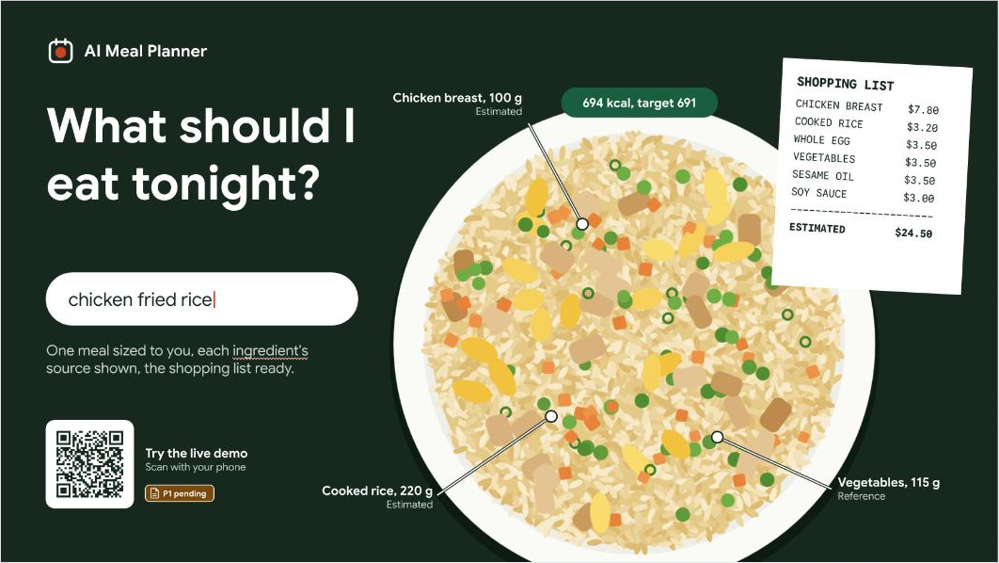
Slide 2. Executive summary
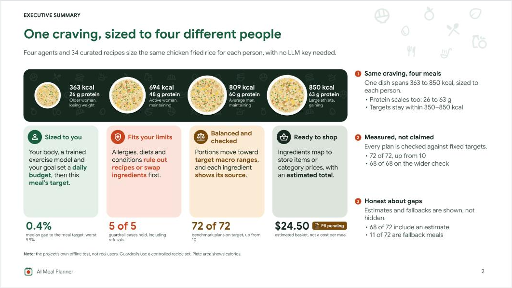
Slide 3. Agenda
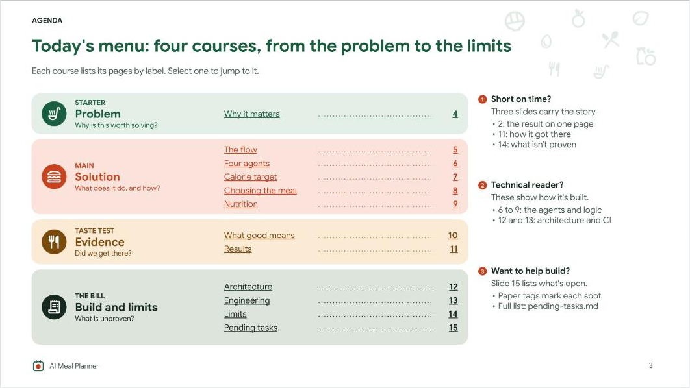
Slide 4. Why it matters
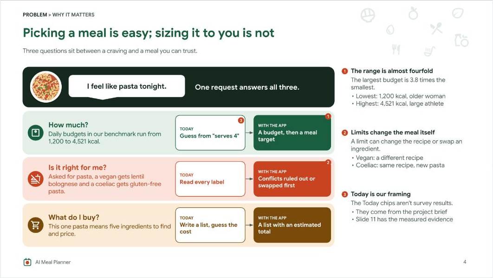
Slide 5. The flow
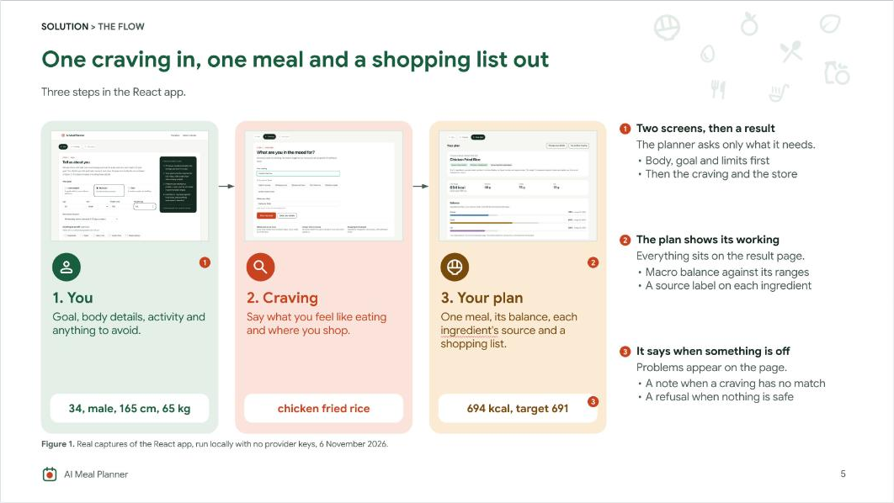
Slide 6. Four agents
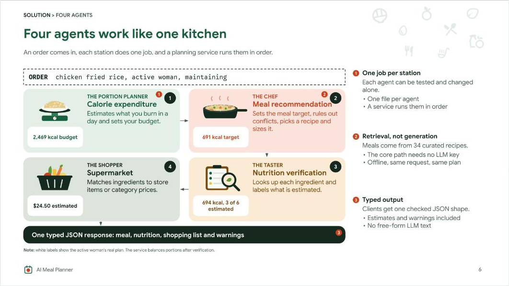
Slide 7. Calorie target
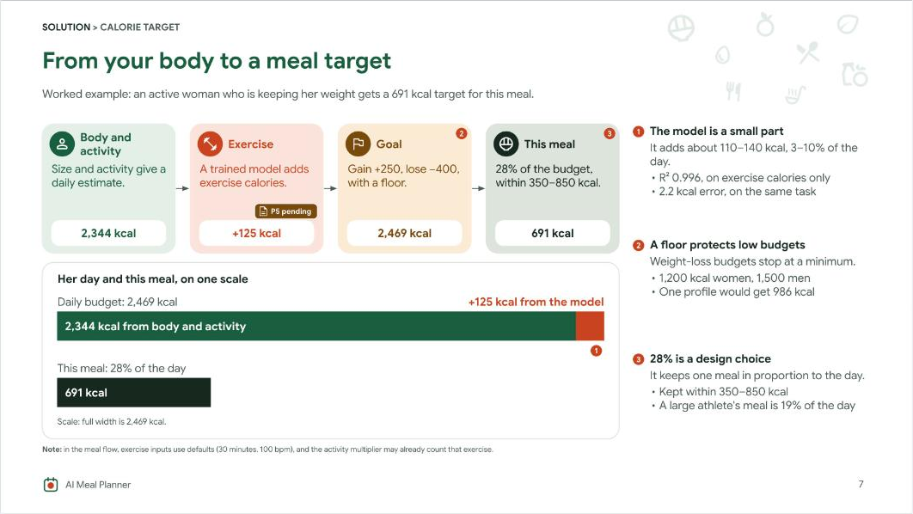
Slide 8. Choosing the meal
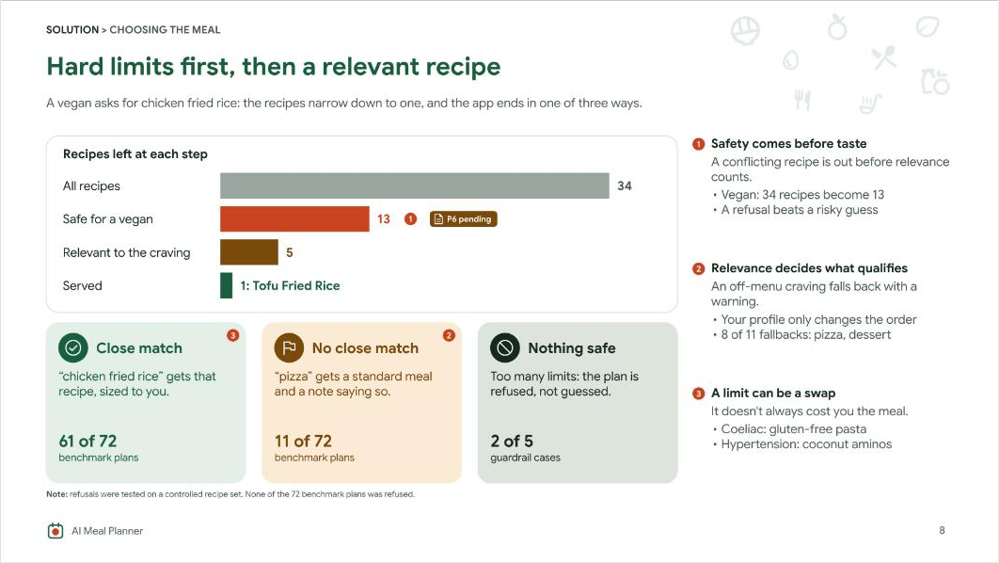
Slide 9. Nutrition
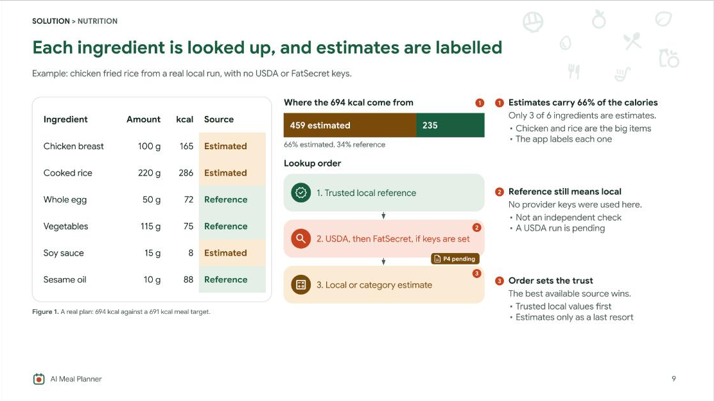
Slide 10. What good means
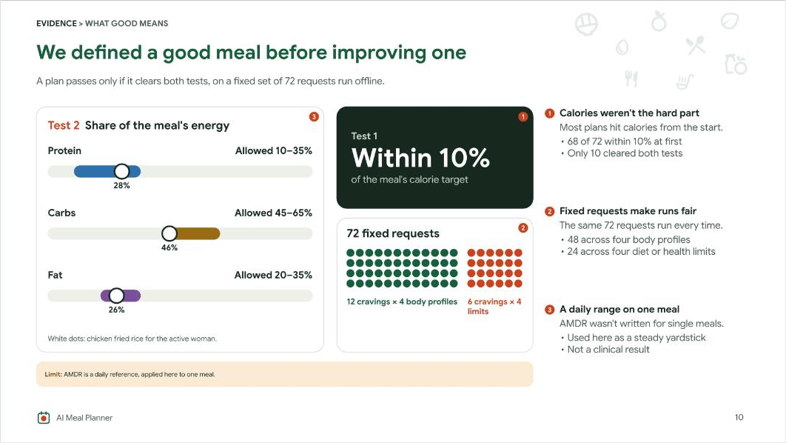
Slide 11. Results
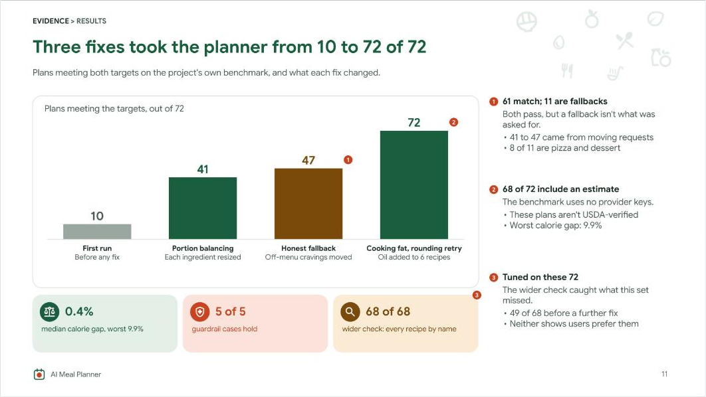
Slide 12. Architecture
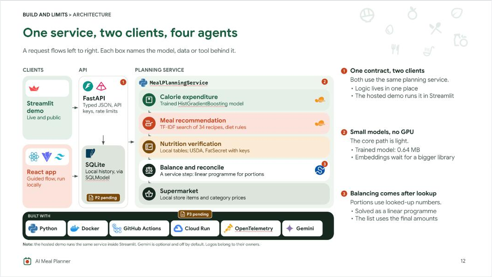
Slide 13. Engineering
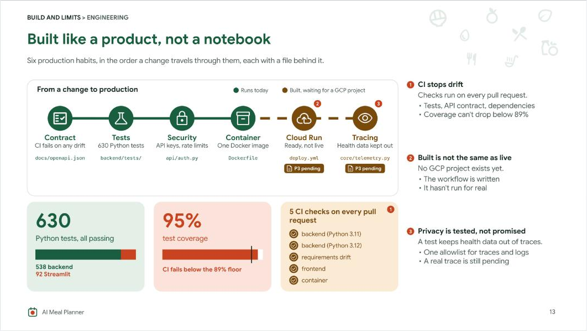
Slide 14. Limits

Slide 15. Pending tasks
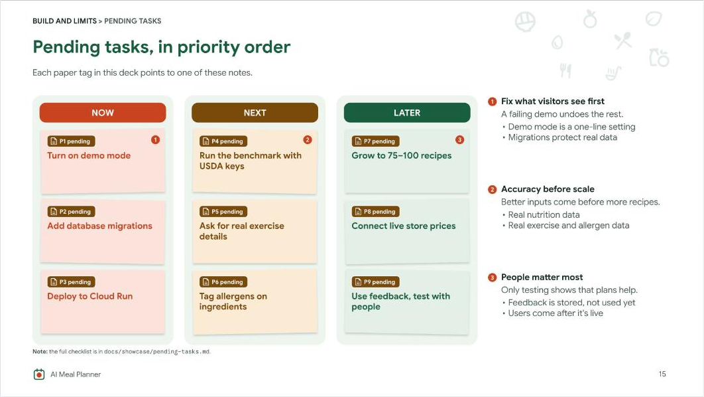
Slide 16. Close
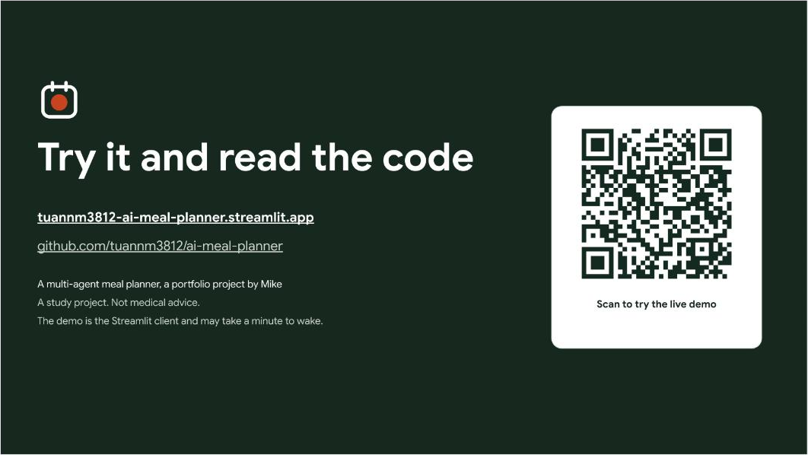